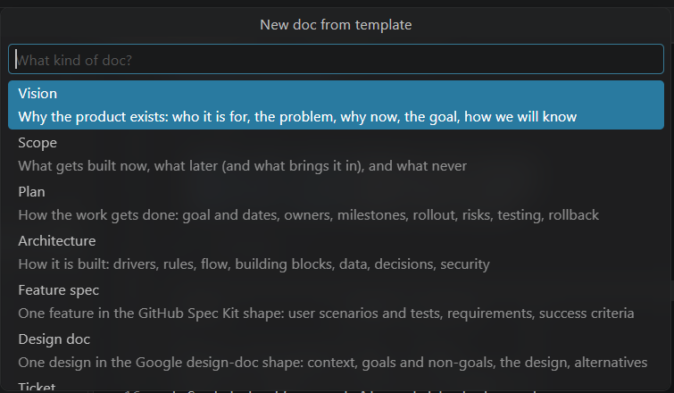
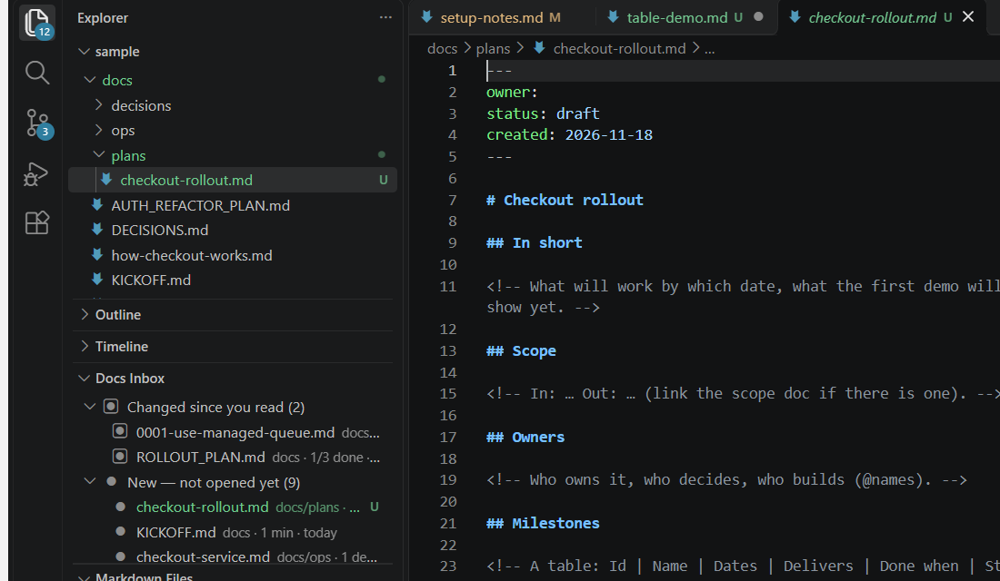
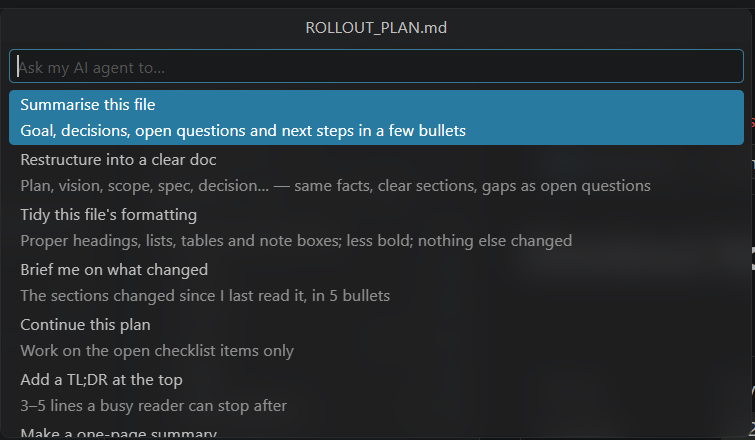

Press Ctrl+B: it becomes **word**. Press it again to undo.
Type - first item and press Enter: the next line starts with - .
What you should see
The Markdown marks are added or removed around your selection. On an empty list item, Enter ends the list.
More detail
The keys switch off by themselves when the extension “Markdown All in One” is installed, so the two do not fight. Ctrl+I for italic works only in VS Code itself, not in other VS Code-based editors such as Cursor.
Starts a new doc in a clear shape: owner, status and date at the top, the right sections, and a grey hint under each one.
Helps: anyone writing a plan, spec, decision record or runbook, and AI agents asked to write one.
Where to find it
Docs Inbox: move the mouse over the title → the new-file button.
Command Palette: All-in-One Markdown Viewer: New Doc from Template…
Try it
Run New Doc from Template…
Click More doc types… at the bottom of the list, then pick Plan.
Type a title, for example Checkout rollout.
next update The first list is short: your team's own templates first, then five well-known formats (MADR, Nygard ADR, RFC, GitHub Spec Kit, Keep a Changelog). Each has one line on what it is for and a ↗ read more link to the format's own website. Picking one writes its section headings only; you write the rest.

More doc types… shows docmap's own shapes, each with a one-line description.
What you should see

docs/plans/checkout-rollout.md opens. The grey hints (<!-- … -->) are hidden on the page. An existing file is opened, never replaced.More detail: all shapes and their rules
Shapes: Vision, Scope, Plan, Architecture, Feature spec, Design doc, Ticket, Decision record, Runbook, Design system (DESIGN.md), Test plan, Postmortem, Release notes, Agent guide (AGENTS.md, with a Never do section for the agent's hard rules), Structure.
The templates follow simple rules: one purpose and one # title per doc; an In short first section; specific headings with no skipped levels; owner, status and dates at the top; dates as 2026-12-01; tasks as - [ ]; Decision: lines with the reason; an Open questions section.
A new decision record, design doc, spec or runbook goes in the folder your team already uses, numbered like its neighbours, in your team's own template.
Helps: teams with an existing docs layout, so new docs don't end up in the wrong place.
Where to find it
Automatic when you use New Doc from Template…
Your own template: put it at docs/templates/<kind>.md (e.g. docs/templates/runbook.md); it replaces docmap's.
Try it
In a project that has docs/decisions/0001-….md, run New Doc from Template…
Pick More doc types… → Decision record and type a title.
Look at where the file was created.
What you should see
It became docs/decisions/0002-use-feature-flags.md, next to 0001, with the MADR sections.More detail
docmap reads adr-tools and log4brains settings to find the decisions folder. With no team template, it uses the shape most of your existing docs of that kind share, else its own template (MADR for decisions, Google design-doc sections for design docs, GitHub Spec Kit sections for specs).
Asks your AI agent to move an old doc's text into a clear shape, keeping every fact, deleting nothing, and writing anything missing as an open question.
Helps: turning long, messy notes or AI output into a doc others can use.
Where to find it
On the page: ⋯ Ask my AI agent → Ask my AI agent about this file… → Restructure into a clear doc.
Command Palette: Ask My AI Agent About This File… → Restructure into a clear doc.
Try it
Open the page of an old, messy doc.
Choose Restructure into a clear doc, then a shape (or Let my agent pick the best fit).
Paste the copied prompt into your AI agent.
What you should see

Restructure into a clear doc is second in the list. Afterwards, ⇆ Compare… → The last commit shows exactly what moved.